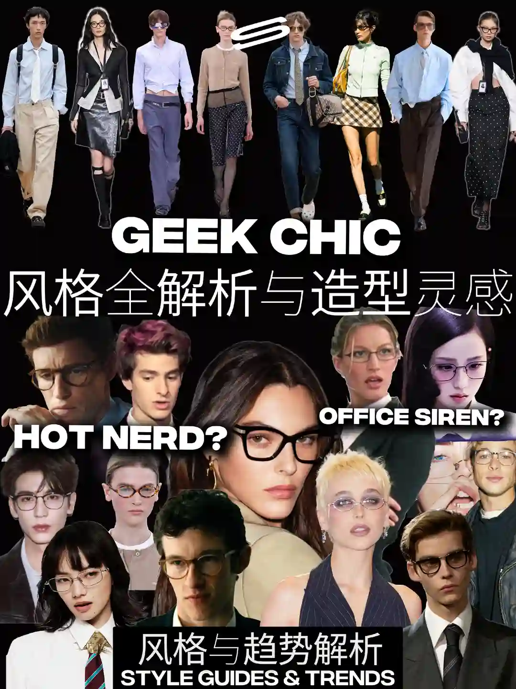
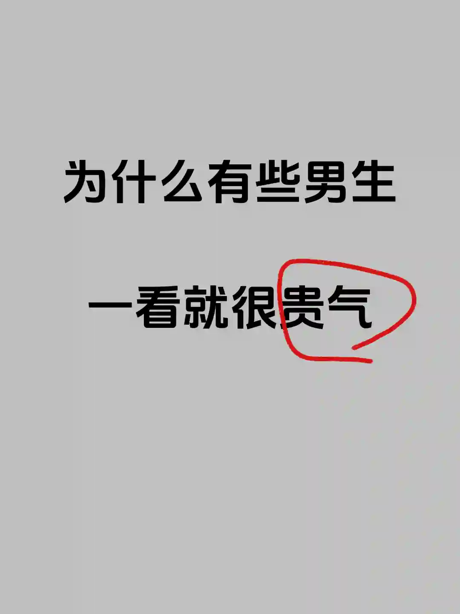
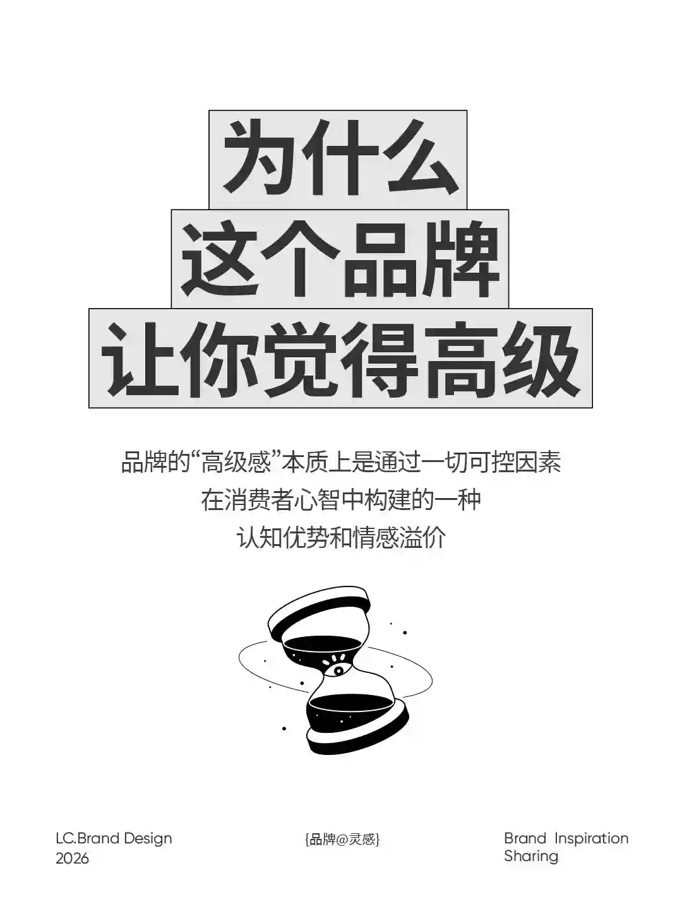
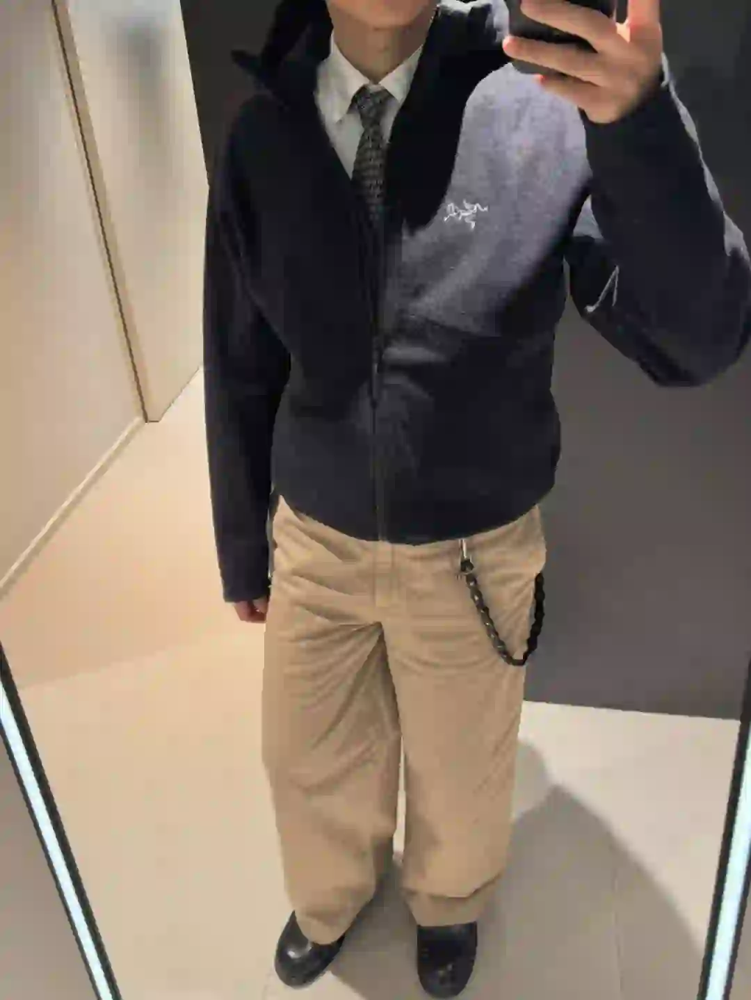
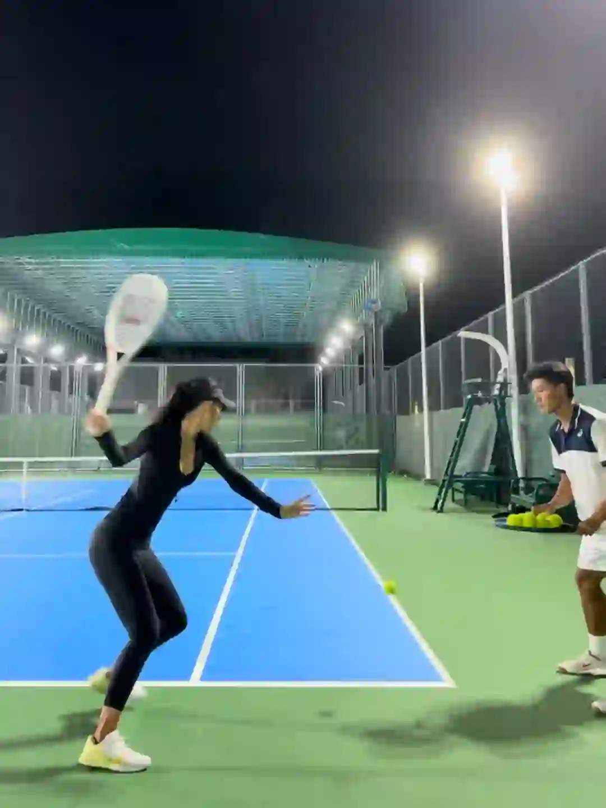

2026年3月20日
03月20日报告
生成时间：2026-03-20 · 范围：时尚 / 穿搭 / 网球
今日参考账号：SENSTREET / Philomena / 伍叔的生活日记
今日高信号标题：一篇看懂高智时髦GeekChic与3大造型思路 ｜ 𝐎𝐮𝐭𝐟𝐢𝐭｜𝐌𝐨𝐛 𝐰𝐢𝐟𝐞▪️ ｜ 为什么有些男生一看就很贵气
竞品策略变化：未命中监控竞品样本
今日高信号标题：一篇看懂高智时髦GeekChic与3大造型思路 ｜ 𝐎𝐮𝐭𝐟𝐢𝐭｜𝐌𝐨𝐛 𝐰𝐢𝐟𝐞▪️ ｜ 为什么有些男生一看就很贵气
竞品策略变化：未命中监控竞品样本

时尚 · 01
一篇看懂高智时髦GeekChic与3大造型思路
⭐ 65257
👍 190299
今天可学
- 内容结构：视频封面 + 视频，更像视频示范/单点表达
- 这条流量带有明显外部加成，只拆内容结构与包装，不原样复制流量来源
- 正文入口：如果你也总是被Hot Nerd、知识分子穿搭、Office Siren、高智感穿搭吸引，你喜欢上的或许是「Geek Chic」框架中，书卷气与时髦之间的反差感。SENSTREET「…
- 标签聚焦：#时尚 / #geekchic / #hotnerd / #高智感穿搭
时尚 · 02
𝐎𝐮𝐭𝐟𝐢𝐭｜𝐌𝐨𝐛 𝐰𝐢𝐟𝐞▪️
⭐ 3461
👍 11608
今天可学
- 内容结构：未判定 + 0图，更像单点表达
- 收藏效率高，说明用户把它当成可复用模板/知识卡，不只是刷到即过
- 正文入口：（正文为空或未取到）

时尚 · 03
为什么有些男生一看就很贵气
⭐ 2266
👍 3839
今天可学
- 内容结构：人物 + 4图，更像单点表达
- 收藏效率高，说明用户把它当成可复用模板/知识卡，不只是刷到即过
- 评论活跃，适合加入观点冲突、对比案例或常见误区来拉讨论
- 标签聚焦：#男性成长 / #男生必看 / #自我提升 / #极简主义

时尚 · 04
为什么一个品牌让你觉得有“高级感”
⭐ 286
👍 174
今天可学
- 内容结构：产品 + 4图，更像单点表达
- 这条流量带有明显外部加成，只拆内容结构与包装，不原样复制流量来源
- 正文入口：品牌的“高级感”本质上是通过一切可控因素在消费者心智中构建的一种认知优势和情感溢价！
- 标签聚焦：#品牌策划 / #品牌设计 / #品牌营销 / #品牌高级感
时尚 · 05
来听帅哥讲时尚...太帅了没听清说了什么
⭐ 1164
👍 4268
今天可学
- 内容结构：未判定 + 0图，更像单点表达
- 收藏效率高，说明用户把它当成可复用模板/知识卡，不只是刷到即过
- 正文入口：（正文为空或未取到）
时尚赛道今日方法论
- 样本依据：𝐎𝐮𝐭𝐟𝐢𝐭｜𝐌𝐨𝐛 𝐰𝐢𝐟𝐞▪️ / 为什么有些男生一看就很贵气
- 当天结构信号：未判定封面 + 0图 最强；优先学习样本 3 条，低收藏流量样本 0 条。
- 时尚赛道今天跑出来的是“审美判断 + 资料感整理”：像 为什么有些男生一看就很贵气 这类高收藏样本，核心不是讲步骤，而是把趋势、风格线索和案例并排给足，用户才愿意以 59.0% 的收藏率反复回看。
- 执行建议：标题先抛出趋势/风格判断，再给明确收益；正文少讲空泛氛围，多给风格标签、对照案例和可复看的视觉结论，让内容更像灵感资料卡。
- 风险提醒：一篇看懂高智时髦GeekChic与3大造型思路 已标记为 [不可复制]，只拆结构，不作为明日选题原样跟进。
今日参考账号：思考生 / 周戴王 / Cityboy穿搭指北
今日高信号标题：穿搭合集｜工装穿搭回顾 ｜ 美式复古🏈｜都市时髦通勤模版 ｜ 上海秋冬男士街拍年度18图（秋冬篇）
竞品策略变化：未命中监控竞品样本
今日高信号标题：穿搭合集｜工装穿搭回顾 ｜ 美式复古🏈｜都市时髦通勤模版 ｜ 上海秋冬男士街拍年度18图（秋冬篇）
竞品策略变化：未命中监控竞品样本
穿搭 · 01
未命名笔记
⭐ 990
👍 6771
今天可学
- 内容结构：人物 + 4图，更像单点表达
- 这条流量带有明显外部加成，只拆内容结构与包装，不原样复制流量来源
- 评论活跃，适合加入观点冲突、对比案例或常见误区来拉讨论
- 正文入口：我记得玩穿搭的初衷是为了变帅 玩了穿搭后大家却跟我说穿搭看脸#真听劝改造 #穿搭 #cleanfit #普通人穿搭 #今日文案 #容貌自卑
- 标签聚焦：#真听劝改造 / #穿搭 / #cleanfit / #普通人穿搭
穿搭 · 02
穿搭合集｜工装穿搭回顾
⭐ 1498
👍 3560
今天可学
- 内容结构：文字卡 + 9图，更像资料型合集
- 这条流量带有明显外部加成，只拆内容结构与包装，不原样复制流量来源
- 评论活跃，适合加入观点冲突、对比案例或常见误区来拉讨论
- 正文入口：分享一下近期10套工装穿搭，顺便回顾一下 从十年前了解到wtaps ，neighborhood等日潮品牌，喜欢上军事工装，对工装风格有了一点概念。到vintage carhartt…
- 标签聚焦：#日潮穿搭 / #工装穿搭 / #Cityboy / #Ootd
穿搭 · 03
美式复古🏈｜都市时髦通勤模版
⭐ 766
👍 1071
今天可学
- 内容结构：未判定 + 0图，更像单点表达
- 收藏效率高，说明用户把它当成可复用模板/知识卡，不只是刷到即过
- 正文入口：（正文为空或未取到）

穿搭 · 04
上海秋冬男士街拍年度18图（秋冬篇）
⭐ 608
👍 2796
今天可学
- 内容结构：人物 + 18图，更像资料型合集
- 收藏效率高，说明用户把它当成可复用模板/知识卡，不只是刷到即过
- 评论活跃，适合加入观点冲突、对比案例或常见误区来拉讨论
- 标签聚焦：#城市氛围感穿搭 / #ootd每日穿搭 / #上海街拍 / #街拍穿搭

穿搭 · 05
长期主义| guidi acne 始祖鸟 穿搭分享
⭐ 401
👍 1277
今天可学
- 内容结构：产品 + 9图，更像资料型合集
- 收藏效率高，说明用户把它当成可复用模板/知识卡，不只是刷到即过
- 评论活跃，适合加入观点冲突、对比案例或常见误区来拉讨论
- 正文入口：个人对长期主义单品的定义为：适合长期穿着、容易打理，如果还可以有些因经年穿着的“色落”痕迹就更好，今天分享的这几个单品都很符合这些定义： - Arc’teryx 始祖鸟 Sawye…
- 标签聚焦：#ootdinspo / #ootd每日穿搭 / #可持续穿搭法则 / #长期主义
穿搭赛道今日方法论
- 样本依据：美式复古🏈｜都市时髦通勤模版 / 上海秋冬男士街拍年度18图（秋冬篇）
- 当天结构信号：人物封面 + 9图 最强；优先学习样本 3 条，低收藏流量样本 0 条。
- 穿搭赛道今天最有效的是“整套可抄作业方案”：高收藏样本 美式复古🏈｜都市时髦通勤模版 说明，只要场景清楚、look 数量够多、搭配结果一眼能看懂，就更容易拿到 71.5% 级别的收藏反馈。
- 执行建议：优先做通勤/职业/一周不重样/套装盘点这类清单式内容；封面先给完整上身结果，图组里再拆单品变化和搭配理由，不要只发单套氛围图。
- 风险提醒：未命名 已标记为 [不可复制]，只拆结构，不作为明日选题原样跟进。
今日参考账号：盖奥 / 网球gogogo / 黑胡子魔法师
今日高信号标题：网球正手零基础教学（新手入门） ｜ 网球标准：德约科维奇-正手慢动作分析！ ｜ 5.0定点直线｜快点！快点！在快点！🎾
竞品策略变化：未命中监控竞品样本
今日高信号标题：网球正手零基础教学（新手入门） ｜ 网球标准：德约科维奇-正手慢动作分析！ ｜ 5.0定点直线｜快点！快点！在快点！🎾
竞品策略变化：未命中监控竞品样本

网球 · 01
网球正手零基础教学（新手入门）
⭐ 19153
👍 26962
今天可学
- 内容结构：视频封面 + 视频，更像视频示范/单点表达
- 收藏效率高，说明用户把它当成可复用模板/知识卡，不只是刷到即过
- 标签聚焦：#网球 / #网球教学 / #网球正手 / #网球训练

网球 · 02
网球标准：德约科维奇-正手慢动作分析！
⭐ 6344
👍 7306
今天可学
- 内容结构：视频封面 + 视频，更像视频示范/单点表达
- 这条流量带有明显外部加成，只拆内容结构与包装，不原样复制流量来源
- 正文入口：最适合业余选手学习的网球动作~#网球 #网球教学 #德约科维奇 #国庆节 #WTT中国大满贯 #网球中国赛季来了 #上海大师赛 #球类运动日常 #打球 #人生的意义
- 标签聚焦：#网球 / #网球教学 / #德约科维奇 / #国庆节

网球 · 03
5.0定点直线｜快点！快点！在快点！🎾
⭐ 1105
👍 4577
今天可学
- 内容结构：视频封面 + 视频，更像视频示范/单点表达
- 收藏效率高，说明用户把它当成可复用模板/知识卡，不只是刷到即过
- 评论活跃，适合加入观点冲突、对比案例或常见误区来拉讨论
- 标签聚焦：#网球 / #点到直线的距离 / #不怕慢只怕站 / #突破舒适区

网球 · 04
attack tennis 🎾
⭐ 933
👍 4324
今天可学
- 内容结构：视频封面 + 视频，更像视频示范/单点表达
- 收藏效率高，说明用户把它当成可复用模板/知识卡，不只是刷到即过
- 标签聚焦：#tennis / #rf / #テニス / #网球
网球 · 05
秋季多巴胺/简单好看的6套网球入秋穿搭
⭐ 944
👍 1442
今天可学
- 内容结构：人物 + 0图，更像单点表达
- 收藏效率高，说明用户把它当成可复用模板/知识卡，不只是刷到即过
- 评论活跃，适合加入观点冲突、对比案例或常见误区来拉讨论
- 正文入口：（正文为空或未取到）
网球赛道今日方法论
- 样本依据：网球正手零基础教学（新手入门） / 5.0定点直线｜快点！快点！在快点！🎾
- 当天结构信号：视频封面封面 + 视频 最强；优先学习样本 4 条，低收藏流量样本 0 条。
- 网球赛道今天胜出的不是热闹球场感，而是“动作纠错/装备收益/新手可执行”：高收藏样本 网球正手零基础教学（新手入门） 证明，只要用户能马上拿去练，收藏率就能来到 71.0%。
- 执行建议：标题写清动作部位、错误修正或装备收益；内容里给慢动作、步骤和上场场景。明星/赛事样本只借包装，不把热点本身当方法论。
- 风险提醒：网球标准：德约科维奇-正手慢动作分析！ 已标记为 [不可复制]，只拆结构，不作为明日选题原样跟进。
- 自动抽取规则：仅收录收藏率 >20% 且未被标记为 [不可复制] 的标题模板
- 写入目标：/Users/zhangxiaosong/shared/context/xhs-knowledge/topics/title-templates.md
- 把今天高收藏、高可复制的打法优先塞进明日发帖计划
- 竞品若连续两天从展示型转向教程/资料型，单独开策略变更记录
- 对被标注 [不可复制] 的样本，只拆结构，不抄流量来源